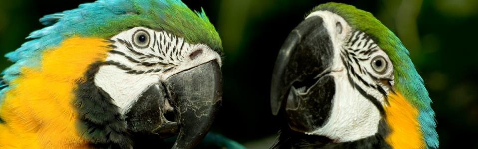
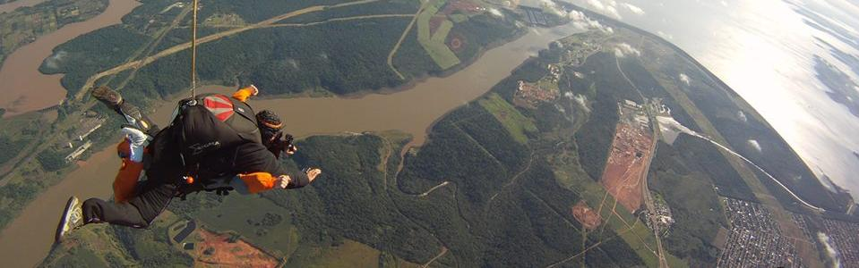
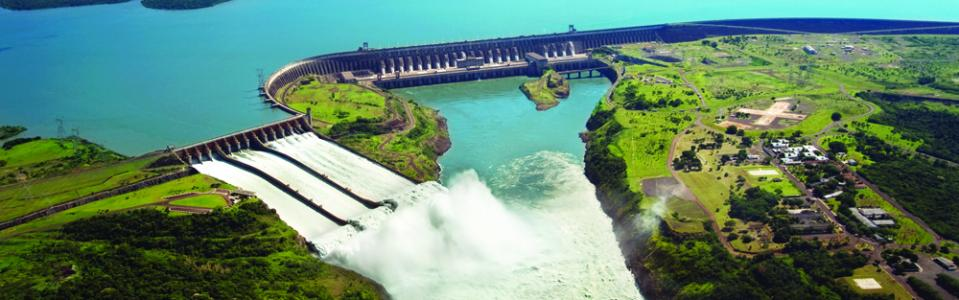
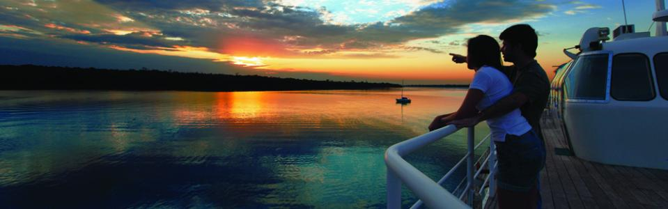
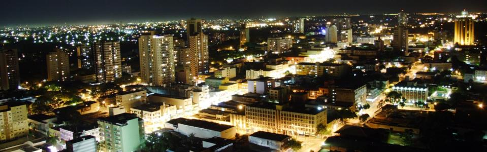
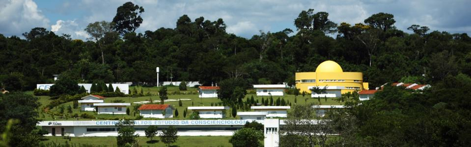

Turismo
Lugares para deleitarse:MACUCO SAFARI
 Un paseo para lavarse el alma
Un paseo para lavarse el alma
¿Ya se ha imaginado usted en formar parte de uno de los siete paisajes más bellos del planeta?¿También ya se ha imaginado estar bajo uno de los saltos que componen las Cataratas de Iguazú y darse un baño rápido?El paseo del Macuco Safari posibilita esta emoción inolvidable.
El Macuco Safari es una osada navegación por el Río Iguazú, que lleva a los turistas a pocos metros de las espectaculares cascadas.
La aventura comienza en tierra firme, a las orillas de la carretera que cruza el Parque Nacional de Iguazú y termina en el mirador de los saltos.Un jipe eléctrico lleva a los visitantes hasta la orilla del río por medio de una senda, en un trayecto de tres kilómetros, en medio a la floresta nativa.
En el camino, florestas centenarias, orquídeas y muchas plantas de especies encontradas solamente en el bosque Atlántico.Hasta animales silvestres aparecen para curiosear qué hacen los visitantes.Los últimos 600 metros antes de llegar al Iguazú se hacen a pie.
El embarque en los botes se hace en una plataforma ubicada en la orilla directa del Río Iguazú, cerca de 4 mil metros después de las Cataratas.Se aconseja dejar las pertenencias y documentos en el atracadero.Se distribuyen bolsas plásticas para proteger las filmadoras y máquinas fotográficas.
Los barcos, con capacidad para llevar a 25 personas, están dotados de dos motores de 150 caballos, potencia suficiente para mover un yate, pero necesaria para vencer la corriente del Río Iguazú.
El uso del chaleco salvavidas es obligatorio.En el camino hacia las Cataratas, los barqueros se esquivan de la corriente mientras los turistas aprovechan para apreciar el paisaje, lo que incluye casi siempre los arcoíris, que se forman de una margen a otra.
El trayecto recorrido por los barcos cerca de las cascadas varía según el flujo del río.Con poca agua, las correderas se ponen más peligrosas y los botes se limitan a ir hasta el Salto Tres Mosqueteros.Ya durante el período de lluvias, o cuando se abren las compuertas de las cuatro plantas hidroeléctricas ubicadas en el curso del Río Iguazú, es posible llegar al Salto Tres Marías, muy cerca de la Garganta del Diablo.
En la parada del barco, por algunos minutos, el turista puede aprovechar el paisaje y registrarlo en imágenes que seguramente les encantarán a los familiares y amigos en el regreso a casa.Desde aquel punto, se pueden ver las Cataratas del lado argentino.
El barco zarpa de nuevo y entonces llega el momento más emocionante del paseo, con el sonido ensordecedor del agua que cae de los acantilados de basalto.Con habilidad, el barquero se acerca a los saltos, provocando baños indescriptibles, capaces de refrescar el calor del verano iguazuense, que dura por lo menos ocho meses del año, y de despertar las más variadas reacciones de los pasajeros, casi todas de sorpresa y alegría.
Con las ropas empapadas, después de tres baños seguidos, llega el momento de volver, una hora y media después del comienzo de la aventura.Que jamás se la olvidará.
PARQUE DE LAS AVES
 El mundo encantado de las aves
Creado en 1994 por la pareja Dennis y Anna Croukamp, el Parque de las Aves es un zoológico especializado en aves, ubicado en Foz do Iguaçu, que permite que los visitantes entren en viveros y tengan un contacto directo con más de 900 aves de 130 especies, muchas de ellas corriendo el riesgo de extinción.
En los amplios criaderos, integrados a la exuberante floresta húmeda subtropical, vuelan aves tropicales raras y coloridas, además de otros animales, tales como cocodrilos, anacondas, boas, titíes y mariposas multicolores.
Para apreciar las aves, el área de réptiles y el criadero de mariposas, los visitantes van por una senda plana y pavimentada de 1.400 metros.Ya en la entrada, son recibidos por araras y papagayos que intentan reproducirse en sus criaderos.
En cada criadero hay placas con el nombre científico y las regiones del planeta donde se encuentran las aves presentes allí.Se indican también las especies en extinción, como también las que están con cachorros.
Dentro de los criaderos, la cercanía con los pájaros es constante.Los tucanes, por ejemplo, más acostumbrados con las personas, se acercan mucho a los visitantes, proporcionando bellas fotos.
El criadero de mariposas, donde hay una gran diversidad de flores, abriga especies de mariposas y también picaflores.
El parque de las Aves, además de atender a los visitantes, desarrolla el apoyo a una serie de investigaciones con el fin de proporcionar la reproducción de especies en cautiverio y en vida libre.
Para lograr la reproducción de algunas especies, los investigadores utilizan los más diversos recursos.En el caso del criadero de los flamencos, varios espejos, dispuestos en ángulos, dan la sensación de que la población de esta ave es mucho más grande.La razón es que los flamencos solo se reproducen en grandes bandadas, pero, como el número de individuos es reducido, el papel de los espejos de confundir la naturaleza.
El parque es exitoso en la reproducción de muchas especies, entre ellas el periquito amarillo, ave en la lista de las amenazadas de extinción, como también la amazona brasileña, además del tucán, del chajá, de la grulla coronada, del cóndor real y de la magnífica arara azul.
SALTO DE PARACAÍDAS
 A 3 mil metros de altura, un paisaje inigualableDespués de conocer los atractivos de Foz do Iguaçu, ¿qué tal aprovechar desde lo alto el espectacular paisaje de la frontera, como dicen los paracaidistas?Pues no es preciso experiencia ni cualquier entrenamiento para hacer el salto doble y apreciar un paisaje “de estremecer” a 3 mil metros de altura.
El primer impacto visual, para quien salta, es la usina de Itaipu y todo su gigantismo, además de su reservorio, que se pierde en el horizonte.En el Río Paraná, después del local donde está la usina, se tiene, entonces una vista privilegiada del agitado puente que une Brasil a Paraguay, y a cada lado de la frontera las dos ciudades hermanas, Foz do Iguaçu y Ciudad del Este.
Más adelante, se ve nítidamente el punto en el que el Río Paraná recibe el Río Iguaçu, poco después de las Cataratas.Basta prestar atención y se notará que aquella masa de agua, que forma una nube en el horizonte, son las caídas de agua más famosas del mundo.
El salto dura diez minutos, aproximadamente, tiempo suficiente para conocer las bellezas de la región de frontera y entender su geografía, una tierra de dos grandes ríos, cada cual con su maravilla:en Iguaçu, las Cataratas y todo su esplendor; en Paraná, Itaipu, la usina que más genera energía en el mundo y una obra que es ejemplo de integración entre pueblos.
Para los turistas y habitantes que nunca saltaron en paracaídas, el salto doble, junto con un instructor, garantiza adrenalina sin riesgos.Pero también se ofrecen saltos para los paracaidistas amadores o profesionales, muchos de los cuales vienen desde lejos para volar en el cielo de la frontera de las maravillas.
Los saltos de paracaídas pueden hacerse en Foz do Iguaçu desde mayo de 2013. El servicio lo ofrece la empresa Skydive Foz, que encontró en la región local y clima favorables.
El centro de paracaidismo funciona en la Estancia Hércules, localizada en las proximidades de la usina de Itaipu, que cuenta con una pista de avión y estructura para recibir a los interesados en participar de la aventura.
USINA DE ITAIPU
 La generadora de energía limpia y renovable más grande del planetaSi el Río Iguazú abriga una de las siete maravillas de la naturaleza, en el Río Paraná, a solamente 38 kilómetros de distancia, está una de las siete maravillas de la ingeniería, según la lista elaborada por la Asociación de Ingeniería Civil de Estados Unidos, después de escuchar a expertos de todo el mundo:la usina hidroeléctrica de Itaipu, emprendimiento conjunto entre brasileños y paraguayos.
Responsable por casi el 20% de todo el consumo de electricidad en Brasil y más del 90% del consumo paraguayo, Itaipu es gigantesca en todos los sentidos.Más grande del mundo en volumen de generación de energía eléctrica, Itaipu está formada por una represa de 7.919 metros de extensión y altura máxima de 196 metros, lo equivalente a un edificio de 65 pisos.
La construcción consumió 12,3 millones de metros cúbicos de hormigón, suficientes para construir 210 estadios de fútbol como el de Maracanã, en Río de Janeiro.El hierro y el acero utilizados permitirían la construcción de 380 torres similares a la Eiffel, de París.
El vertedero de la usina, que tiene como función descargar el agua no utilizada para la generación, tiene capacidad para verter 62,2 mil m³/s, 40 veces más que el caudal promedio de las Cataratas de Iguazú.
Además de su grandiosidad, Itaipu, desde su origen, manifestó cuidados con la preservación ambiental.En el período de formación del reservorio, que se extendería por un área de 1.350 km², una gran operación desplazó a animales de las áreas que serían inundadas, para que, posteriormente, se los devolviera a la naturaleza, en uno de los muchos refugios biológicos y reservas creados por Itaipu.
Construida en un área que ya se había devastado, en el lado brasileño, por la práctica agrícola, Itaipu lanzó el programa más grande de reforestación ya desarrollado en el mundo por un emprendimiento de 20 millones de plantones de árboles nativos en la franja de protección del reservorio.
Las acciones también incluyen la recuperación de arroyos y nacientes en toda la Cuenca de Paraná 3, área de influencia directa o indirecta en el reservorio.
Abierta a la visitación en 1977, cuando aún estaba en obras, la Usina de Itaipu recibió, desde aquél año, alrededor de 16 millones de visitantes, por las costas brasileña y paraguaya.
Circuito Especial: Permite la visita al interior de la represa, en un autobús especial.Antes del paseo, el visitante asiste a una película sobre Itaipu.La atención se hace por monitores bilingües, con guión para acompañamiento.
LAGO DE ITAIPU
 Un lago de aguas calmadas y límpidas
El estanque de Itaipú, formado en 1982, con la construcción de la planta, ofrece una serie de actividades de recreación para los habitantes y los visitantes, que pueden disfrutar de playas artificiales, participar de pescas deportivas y divertirse en el Parque Acuático Termal Lago de Itaipú.
El parque está instalado en una área de 260 mil m2 en Itaupulândia, localidad a 70 kilómetros de Foz do Iguaçu. La infraestructura de recreación incluye toboganes acuáticos y piscinas termales, con agua captada del Acuífero Guaraní, que se mantiene naturalmente climatizada a 36 grados.
Hay atracciones para todas las edades Los niños cuentan con una área de piscinas y juegos, con el castillo de las aguas, toboaguas infantiles y un lagoon, con más de 2 mil metros cuadrados.
Para los adultos, hay una piscina termal cubierta, con capacidad para 700 personas, con bar anexo; una piscina con olas y tres toboaguas gigantes: el Kamikaze, el Caída Libre y el Caracol. Cada uno de ellos ofrece un tipo diferente de emoción y diversión.
También está el Río Lento, para navegar en botes individuales por toda el área del parque, el Río Salvaje, bares mojados, restaurantes, quioscos y un escenario para espectáculos.
Playas artificiales
En los municipios de Foz do Iguaçu, Santa Terezinha de Itaipu, São Miguel do Iguaçu, Itaipulândia, Missal, Marechal Cândido Rondon y Santa Helena existen playas artificiales, muy visitadas durante el verano.
La terminal de turismo de Santa Helena es la más grande do todas, con 87 hectáreas de playa, bosque, atracaderos, pabellón de exposiciones, restaurantes y áreas de camping, además de quioscos para los veraneantes.
Pesca deportiva
A lo largo del año se realizan torneos de pesca deportiva en los municipios que quedan a las orillas del estanque de Itaipú. Usted puede consultar el calendario de 2014 en la página web de Adetur - Agencia de Desarrollo de la Región Turística Cataratas del Iguazú y Caminos al Lago de Itaipú.
Foz de las compras
Llevar Foz do Iguazu a todos lados
Las tres ciudades de la triple frontera -Foz do Iguaçu, Puerto Iguazú (Argentina) y Ciudad del Este (Paraguay)- forman un centro de compras gigantesco, tal vez sin paralelo en el mundo, por la diversidad, características y calidad.Pero el primer punto a destacarse es el de la artesanía regional.
Herencia de los indios guaranís, mezclada a la cultura de los pueblos que colonizaron la frontera a partir de la llegada del hombre blanco, la artesanía de la región se vende en casas especializadas y hasta en las calles y ferias.
Las piezas van desde alfombras, bolsas, collares y redes hasta piedras preciosas y semipreciosas, además de objetos hechos de cerámica, vidrio, materiales reciclables y madera gruesa.
En las tiendas especializadas en artesanía, también se encuentran réplicas, hechas de diversos materiales, de atracciones de la región, como la Usina de Itaipu, las Cataratas del Iguazú y los puentes de la Amistad Tancredo Neves.
Merece atención especial la artesanía producida por el Ñandeva.Es un programa de desarrollo de la artesanía local, que, con el apoyo de Itaipu, busca el fortalecimiento de una identidad trinacional en la región de frontera entre Argentina, Brasil y Paraguay.
Piezas del Ñandeva se encuentran en la tienda que el programa mantiene en el Centro de Recepción de Visitantes de Itaipu y en la tienda de la cooperativa de artesanos del Oeste y Sudoeste de Paraná.
Artesanía y también suvenires están a la venta en otra tienda montada en el CRV de Itaipu y también en el Parque Nacional del Iguazú.
El turista encuentra allí colecciones exclusivas, tematizadas con diseños que representan las bellezas del parque.Parte de la renta obtenida con la venta de los suvenires, en el Parque Nacional, es revertida para acciones de protección de la biodiversidad local.
Comercio en Foz do Iguaçu
En el comercio de Foz do Iguaçu, se destaca el JL Shopping, un espacio de 61.000 m² distribuidos en tres pisos, donde hay más de 140 tiendas, cuatro salas de cine y hasta un supermercado.
El shopping se sumó al comercio tradicional de la ciudad, localizado principalmente en la Avenida Brasil y en sus paralelas y transversales, donde el consumidor puede adquirir buenos productos de marcas brasileñas e internacionales.
En el centro de la ciudad, algunas tiendas se destacan.Es el caso de la Capoani, que representa marcas internacionales como Hugo Boss, Ermenegildo Zegna y Diesel, y nacionales como Forum y Zoomp.
En las Modas Alice, confecciones de prêt-à-porter y alta costura.Para zapatos y carteras, buenas opciones son las tiendas Keiko, Datelli y Calçados Rosa.
En el centro de Foz, hay otras tiendas que merecen ser citadas, como Bambina moda femenina, -Colcci, moda femenina, carteras y accesorios-, Sadi Magazin -moda masculina, y Mariah Acessórios.
Comercio en Argentina
En Puerto Iguazú, en Argentina, el fuerte del comercio son ropa y artículos de cuero.Hay buenas tiendas de ropa en general y ferias pequeñas donde se puede comprar aceitunas, aceites y quesos, productos tradicionales del país.
Poco antes de la aduana argentina, está el Duty Free Shop, que vende productos de las más diversas procedencias, como bebidas, ropa, accesorios, joyas, juguetes y perfumes.
Para los que aprecian el vino, Puerto Iguazú tiene tiendas especializadas, que venden productos de las mejores zafras.Los vinos argentinos tienen una relación costo beneficio muy buena, en comparación con vinos de otros países.
Comercio en Ciudad del Este
Tercer centro comercial más movido del mundo, atrás solo de Miami y Hong Kong, en Ciudad del Este los shopping centers y tiendas ocupan la mayor parte del área central de la ciudad, segunda más grade del Paraguay.
El turista brasileño puede adquirir, sin impuestos, US$ 300 en compras en Paraguay.Si la compra supera este valor, habrá impuestos sobre el excedente.
Casinos
La emoción de los grandes casinos
Las noches en Foz do Iguaçu también proporcionan a los visitantes acometidas en el glamur y emoción de los grandes casinos.Las casas están ubicadas en Puerto Iguazú (Argentina) y Ciudad del Este (Paraguay) —en Brasil, la práctica es prohibida desde la década de 1950— pero tienen fácil acceso para quien está en Foz.
Los servicios de transporte están hechos por los propios hoteles o empresas especializadas.
En el Casino Iguazú, usted encuentra todo el clima del estándar europeo, con mesas de ruleta, blackjack, póquer, bacará, dados y gran variedad de traga monedas.Las salas VIPs atienden a los jugadores más exigentes.
A lo largo del año, las casas ofrecen programaciones diferenciadas, como shows, peleas de box, exposiciones de artes, piezas de teatro, entre otras.
La entrada a los casinos es permitida solamente para mayores de 18 años.
El Casino Acaray, en Ciudad del Este, funciona anexo al Hotel Acaray, que tiene suites con vista a la piscina del jardín y al Puente de la Amistad y al Rio Paraná.
Vida nocturna
 Un pueblo alegre y que le gusta disfrutar de la noche
Después de pasar el día conociendo las maravillas de Foz do Iguaçu, ¿qué te parece conocer la vida nocturna de la ciudad?Será, seguramente, una experiencia que valdrá la pena, por la variedad de atracciones y por la oportunidad de convivir con los iguazuenses, un pueblo alegre y que le gusta divertirse en la noche.
Foz do Iguaçu tiene desde espectáculos típicos, con énfasis en el folclore local y latinoamericano, hasta la presentación de artistas que hoy están en los escenarios de todo Brasil.
Desde el rock hasta la MPB, del sertanejo (música country de Brasil) a nombres internacionales, aquí lo que no faltan son razones para divertirse.Conózcalo.
Iporã Lenda Show
Espectáculo que mezcla baile, música y muchos colores "Iporã Lenda Show" lleva a su escenario a 50 artistas, cantantes y músicos.En un viaje musical, ellos cuentan la leyenda de las Cataratas de Iguazú y después “viajan” por diversos países de América del Sur, hasta volver a Brasil para mostrar la cultura del Norte y Nordeste y la picardía del carioca.
De lunes a sábado, a las 22:00, Avenida das Cataratas, 1.749.
Show de la Churrascaria Rafain
La churrascaria Rafain presenta, diariamente, un espectáculo de músicas y bailes que mezcla el folclore de los países de la frontera –Brasil, Paraguay y Argentina– al de otros países de las Américas y del Caribe.
La presentación, que dura casi dos horas, se hace durante la cena, donde se sirven variedades de carnes nobles, acompañadas de ensaladas, platos calientes y buffet de postres y helados.
Diariamente, a partir de las 20:45.
Oba-Oba Bottega Samba Show
Samba, carnaval y cultura afrobrasileña a la moda carioca, en un escenario de Foz do Iguaçu. Más de 30 artistas, incluyendo bellas morochas, participan del espectáculo, que abre con un homenaje a varios países, para colmar con la fiesta en el sambódromo, cuando hasta los más tímidos de la platea se entregan al samba.
El Oba-Oba Bottega Samba Show se presenta de lunes a sábado, a las 20:00.
Zeppelin Old Bar
Rock’n’roll, jazz, blues o MPB en la compañía de amigos y de cerveza bien fría es la propuesta del Zeppelin Old Bar, que trae semanalmente a Foz do Iguaçu bandas de Brasil y del exterior.
El bar también tiene espacio para presentaciones de piezas y exposiciones.
Atención de martes a sábado, a partir de las 20:30.
Ono Teatro Bar
Casa de espectáculos con capacidad para tres mil personas, la Ono Teatro Bar presenta grandes nombres nacionales e internacionales en su programación.
Además, atiende a eventos empresariales, desfiles y exposiciones comerciales y culturales.
Espectáculos los viernes y sábados, a partir de las 23:00.
Ballinas Nuit Club
Pub al estilo irlandés, con capacidad para 500 personas, el Ballinas Irish Pub también tiene presentaciones de música en vivo.El mejor día es el viernes, con atracciones pop/rock.
El bar ofrece casi 40 tipos de cerveza, además de la mayoría de las marcas de whisky.
De martes a domingo, a partir de las 19:00, hasta el último cliente.
Wood’s Bar
La especialidad del Wood’s Bar, a ejemplo de sus congéneres en São Paulo, Curitiba y otras ciudades, es la música sertaneja en vivo.
Aquí se presentan dúos de cantantes muy exitosos en todo Brasil.
La casa abre los viernes y sábados, a partir de las 23:00.
Teatro do Excluído
Vale la pena conocer la propuesta de la Compañía Experimental Teatro do Excluído, que pretende mostrar, de forma profesional, lo que hay “fuera del eje cultural vigente en Brasil".
Se presentan las piezas a plateas pequeñas, como máximo de 15 espectadores.
La sala está dentro de la Escuela Lupah, en la calle Rui Barbosa, Centro.
Laos Lounge Bar
Con decoración inspirada en los países del Sudeste Asiático, el Laos está ubicado en la zona de vida nocturna más intensa de Foz do Iguaçu.En el bar, hay presentación de música en vivo y electrónica.Los aperitivos y platos asiáticos atraen a muchos clientes, entre nativos y turistas.
Taj Bar
Es la más nueva casa nocturna de Foz do Iguaçu.Similar a los Taj de Curitiba, Balneario Camboriú y Vitória (Espírito Santo), el bar tiene decoración india y ofrece platos de la cocina de este país y también de Japón y de Tailandia, con un toque brasileño.
ESTABELECIMIENTOS
Iporã Lenda Show
(5545) 3523-1177
Show de la Churrascaria Rafain
(5545) 3523-1177.
Oba-Oba Bottega Samba Show
(5545) 3529-9070.
Zeppelin Old Bar
(5545) 3523-1804.
Ono Teatro Bar
(5545) 3027-5700 / 3027-5704
Ballinas Nuit Club
(5545) 3027-0077
Wood's
(5545) 3523-5373
Laos Lounge Bar
(5545) 3028-2930
Taj Bar
(5545) 3523-5373
Teatro do Excluído
(5511) 7950-4000
Cognópolis
 Turismo del conocimiento
“No crea en nada. incluso en lo que le dijeron aquí dentro. Pruébelo. Tenga sus experiencias personales.” Es así, enalteciendo el Principio de la Descreencia, que la gente de la Conscienciología recibe a los visitantes, en su Cognópolis o "ciudad del conocimiento" - cognópolis deriva del latín Cognitio (conocer) y del griego polis (ciudad).
Creada por el médico y profesor Waldo Vieira, el término Conscienciología le da nombre a los estudios de la consciencia y sus diversas formas de manifestación. Según los conscienciológos, la consciencia es más que el cerebro físico y trasciende la propia existencia actual, ya que acumula experiencias resultantes de múltiples vidas.
Cognópolis, que le acabó dando nombre al barrio donde se ubica, recibe tanto a personas interesadas en saber más sobre la Conscienciología como turistas comunes, que encuentran allí una serie de atractivos como la Holoteca ("colección de colecciones") y el Tertularium, donde el propio Waldo Vieira aparece para charlas matinales todos los días de la semana.
El barrio Cognópolis, creado en 2009, tiene 7 millones de m² de área. De ese total, 1,7 millones de m² forman el área de la Conscienciología, que abriga 22 instituciones volcadas hacia el estudio de la Conscienciología, entre ellas el Ceaec - Centro de Altos Estudios de la Conscienciología, fundado en 1997 por Waldo Vieira, además de condominios residenciales y áreas de preservación permanente.
El Ceaec reúne cerca de 750 profesionales de diferentes áreas, que actúan voluntariamente, dedicándose al estudio de la consciencia en evolución, con realización de investigaciones y oferta de cursos teóricos y prácticos a la comunidad, acerca de las temáticas más variadas.
En el Ceaec, está la Holoteca, palabra del griego que significa algo como "colección de colecciones". Investigadores, profesores y estudiantes encuentran allí 850 mil ítems. Son 93 libros, de los cuales 6 mil diccionarios; colecciones de conchas del mar, sellos, monedas y todo lo que pueda representar el conocimiento humano.
Para visitar el Ceaec, no es necesario marcar hora. La atención, diariamente (inclusive los domingos), es de 09:00 a 17:00. El visitante, de Brasil y del exterior, podrá conocer la estructura del campus, inmersa entre la naturaleza, y todas las actividades desarrolladas allí, incluso las colecciones y exposiciones multiculturales.
El Tertuliarium tiene conferencias y debates entre 09:00 y 11:00, con la participación de Waldo Vieira, también diariamente. Y de 12:30 a 18:00, cuando voluntarios presentan los trabajos que desarrollan y participan de discusiones. Los debates son transmitidos por internet.
En octubre de 2014, Cognópolis inaugura un hotel con capacidad para 300 lechos. El Mabu Interludium Iguassu Convention fue construido por la Conscienciología, pero la operación es de la Red Mabu de Hoteles. Él atenderá no solamente a los visitantes, sino al público en general.
FOZ DO IGUAÇU PARK SHOW
Cultura al alcance de la mano
Foz do Iguaçu Park Show es un complejo cultural y de recreación con varias atracciones volcadas a las familias y, especialmente, a los niños y adolescentes. En 2014, ya están abiertos al público el Museo de Cera Dreamland y el Valle de los Dinosaurios.
El Museo de Cera Dreamlandpresenta casi 100 personalidades mundiales, en tamaño natural. En 16 escenarios, están ídolos de la música de varias épocas, como Frank Sinatra, Beyoncé, Michael Jackson, Elvis Presley, Justin Bieber, Madonna y Amy Winehouse; y líderes como los papas Juan Pablo II y Francisco, la reina de Inglaterra, Elizabeth, el presidente de Estados Unidos, Barack Obama, y la presidente de Brasil, Dilma Rousseff.
Además, hay espacio para íconos del deporte, como Pelé, Ayrton Senna y Neymar, además de estrellas de Hollywood, como Clint Eastwood, George Clooney, Leonardo di Caprio y Marilyn Monroe; personajes de dibujos animados y de la saga “Guerra en las Estrellas”. También está el navío de Jack Sparrow, de la serie “Piratas del Caribe”, con una tripulación que incluye al Capitán Gancho.
El Valle de los Dinosauriosreproduce la era jurásica, con 20 dinosaurios esparcidos por un área de mucha vegetación, entre los cuales el Tiranosaurio Rex, que tiene la altura de un edificio de cuatro pisos y 23 metros de largo, de la boca a la cola.
Todos los animales del Valle de los Dinosaurios emiten sonidos y tienen movimientos de robot -ellos mueven la cola, el pescuezo y los brazos, abren la boca y mueven los ojos. Para el público, la sensación es de viajar en el tiempo o, al menos, de estar en el escenario de una película de Hollywood.
Foz do Iguaçu Park Show está instalado en una área de 60 mil metros cuadrados, en la BR-469, la Rodovia das Cataratas (Carretera de las Cataratas), que da acceso al Parque Nacional do Iguaçu.